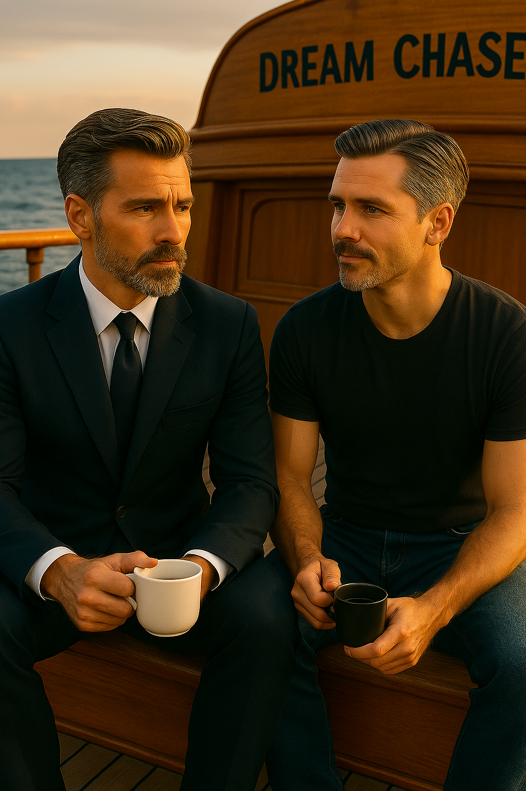

Демон Скеттино внутри Антона
«Демон Скеттино внутри Антона» — откровенный разговор двух братьев-близнецов. Марк спрашивает Антона, как он сбежал с катамарана в шторм, неужели испугался? Антон рассказывает, как боролся с внутренним «демоном Скеттино» — тем самым капитаном Франческо Скеттино, покинувшим Costa Concordia. Этот рассказ — о мужестве, внутренней борьбе и силе быть не как он.